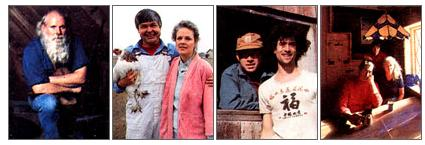

The Rise of New America
Home
In addition to writing and playing the violin every chance he gets, Dr. Lessinger keeps a sharp eye peeled on the nation's economy, looking for indications that corroborate his theory of socioeconomic change and migration. He also publishes a bimonthly newsletter on Penturbia, available for $25 per year fromSocioEconomics, 17004 26th Ave. N.E., Seattle, WA 98155. Recently re turned from a visit to Australia, Lessinger reports finding numerous penturbias down under, to him a sign that the profound economic changes he sees are global in reach.
MOTHER: You predict the rise of a new economy, one you call that of "the Careful Conserver." To achieve it, must we pass through an economic depression?
Lessinger: It is altogether likely, as the weakened dollar and the stock market crash of last October appear to augur. Of course, most economists have banished the word depression from their professional vocabularies, believing that the government can manipulate away such a seemingly unpleasant extreme whenever it chooses. I feel otherwise, that depression is as inevitable as that winter will follow summer. However, the important thing is not to be depressed by depression but to see the event as functional and constructive-painful here and there but only in the short run. Rather it's a sign of a changing of the guard, a transition during which new social and economic solutions and priorities can arise. It might well be regarded as a time for hope rather than despair, the pause between acts as the scenery shifts.
MOTHER: What do you see as the life span of the economy of the Careful Conserver? Will it, too, eventually be replaced?
Lessinger: The old consumerist economy-that of the "Little King"-reached its peak, and its replacement began to emerge, some time around 1958, which was an important turning point in the U.S. for many trends. Voter participation, for example, peaked then, followed by an increase in voter apathy. It was also the year that U.S. fertility rates peaked. In the 1960s, antimiddle-class and anti-suburban attitudes began to surface (long hair, the Beatles, unisex, ubiquitous Levis, VW bugs), and this emergence was the first indication that the old values were being called into question. In the 1970s, the old, consumption-based economy reasserted itself, but Pyrrhically so. Now we're in a state of rapid transition and the new economy has purchased an unshakable foothold. Though the "Little King" impulse to consume, spend and borrow is still powerful and dangerous, we do have a Gramm-Rudman bill. Also, many people have opted out of the steam-pressure credit/urban economy and have migrated to Penturbia, where they already practice a thriftier, more self-sufficient and appropriate lifestyle. I predict that this new economy will reach its peak in 2010 and that, by 2065, it will have run its course.
MOTHER: You say the "Careful Conserver" economy will be based in some of the more rural counties, in what you call, collectively, Penturbia. But what will drive this new economy, function as its mainspring?
Lessinger: Once an economy-after much experimentation and suffering-finally reaches its peak, it resists being turned off.
It wants to keep going. The only thing that can stop the momentum of such excess is the battering ram of a new economy, one opposed to everything the old one stands for. In this sense, the "mainspring" is reactive. Currently we crave consumption, to the point of excess. However, this desire threatens our competitive standing in the world, our standard of living, our peace of mind. As a result, we will have to modify our spending habits and nurture our resources rather than waste them. Frugality will return as a virtue and we'll come to regard with disdain those people still addicted to the conspicuous consumption and material gluttony hawked by the old economy. It is in this way that economies, and the society of which they are part, merge to become a socioeconomy. Which is to say that money matters, but peoples' ideals can be an equally strong force.
MOTHER: Short of migrating, or even after migrating, what can people do to alter their lives in a way consonant with the new economy?
Lessinger: Look at it this way, if you don't mind a personal note. After a heart attack, I went on the Pritikin diet, which seemed at first a deprivation. Then I realized the choice I faced: ice cream, cake and possibly premature death on one hand, or being able to play string quartets and enjoy a longer, better life on the other. I chucked sweets. Similarly, I recommend that people rid themselves of nonessentials, acquisitions that clutter life rather than enrich it. Examine your real needs rather than those foisted upon you. When you buy, buy to enhance your life, not just for the sake of buying or to keep up with the Joneses. But the "New America" demands more than simply a curb on spending; it also needs individual activism and participation to shape and perfect it. It asks for a new sociality, a new responsibility. Sharing childrearing duties, for example, or joining in cooperative garden projects. Being assertive on school or planning boards to improve education or protect public lands. Developing ways to make people of all ages productive and integrated once more, or finding means of resuscitating other moribund economies, whether here or abroad. The point is, we need to find creative alternatives to spending and shopping. Build something, help something, save something. The possibilities are endless.
|
 |
|
|